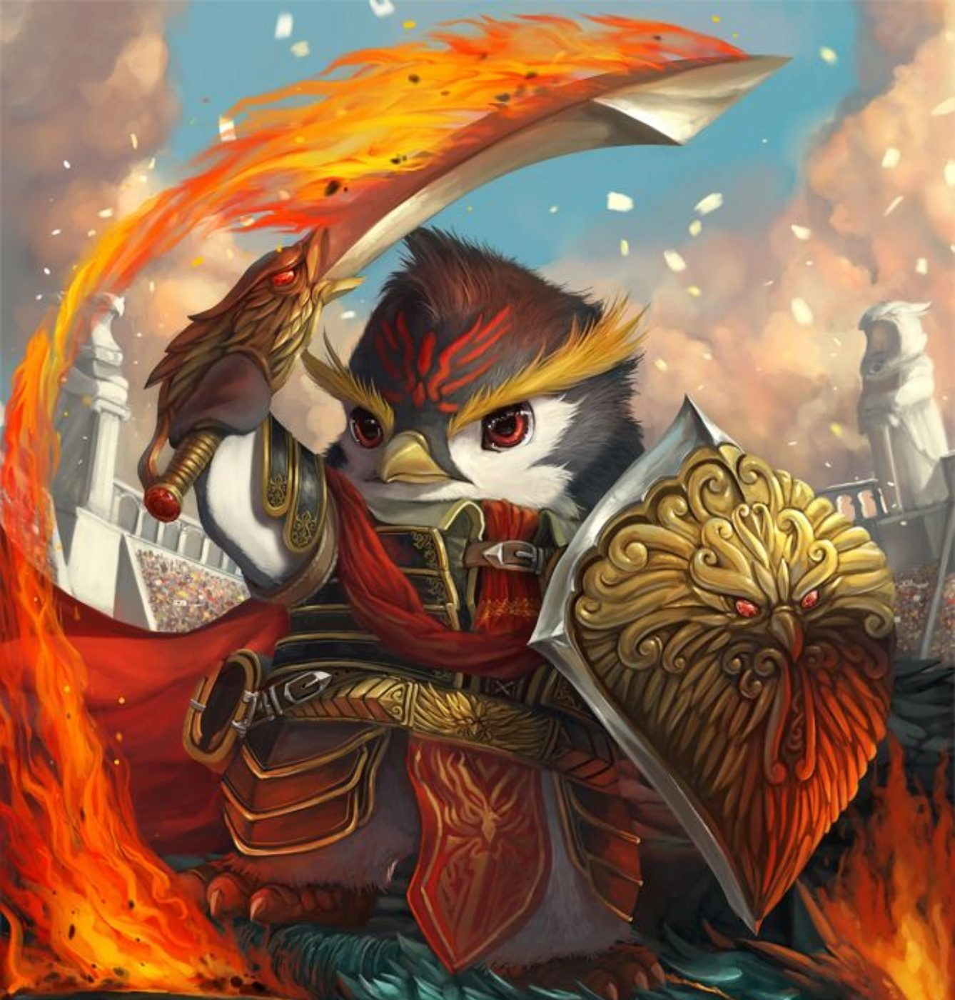

Aus der Ferne, für dich
Gute Besserung,
Pingling 💛
Ohne dein Lächeln ist die Welt ein bisschen dunkler.


Ich weiß, krank sein ist das Allerschlimmste – deshalb hast du hiermit die offizielle Erlaubnis, gar nichts zu tun außer auszuruhen und zu schlafen. Alles andere kann warten.
Jede Tasse Tee und jedes Nickerchen bringt dich ein Stück näher dahin, wieder ganz du selbst zu sein. Nimm dir alle Zeit, die du brauchst.
Auch wenn gerade viele Kilometer zwischen uns liegen: In Gedanken bin ich die ganze Zeit bei dir – wir schauen schließlich in denselben Himmel. 🌠
- 🍵 Warmer Tee
- 🛌 Ganz viel Ruhe
- 📞 Anrufe, wann immer du willst
- 💌 Gute-Nacht-Nachrichten
- ❤️ Unendlich viel Liebe
Sobald du wieder fit bist, geht's los …
-
🇮🇹
 ItalienPasta, Sonne und Gelato
ItalienPasta, Sonne und Gelato
-
🏰
 Nördlingendie echte Attack-on-Titan-Stadt
Nördlingendie echte Attack-on-Titan-Stadt
-
🧊
 Das Eismuseumdie dickste Jacke einpacken
Das Eismuseumdie dickste Jacke einpacken
-
🌶️
 ChongqingHotpot und eine Stadt voller Treppen
ChongqingHotpot und eine Stadt voller Treppen
-
🗼
 TokioNeonlichter und endlos Ramen
TokioNeonlichter und endlos Ramen
-
🏟️
 OlympiaparkSonnenuntergang vom Olympiaberg
OlympiaparkSonnenuntergang vom Olympiaberg
-
🎲

Baldur's Gate 3zu zweit durch Faerûn
Aber zuerst: ausruhen. Die Welt läuft uns nicht weg. 🌍
Mit all meiner Liebe ❤️
Fotos via Wikimedia Commons: Manarola (Timothy A. Gonsalves, CC BY-SA 4.0) · Nördlingen (Wolkenkratzer, CC BY-SA 4.0) · Icehotel (Lars Thulin, CC BY-SA 4.0) · Hongya Cave (Jonashtand, CC BY-SA 4.0) · Tokyo Tower (David Kernan, CC BY 4.0) · Olympiapark (Martin Falbisoner, CC BY-SA 3.0)
{kind=link}
{kind=link}
_by_Alessandro_Falca_%26_AnnaSofia_M%C3%A5%C3%A5g.jpg){kind=link}
{kind=link}
{kind=link}
{kind=link}